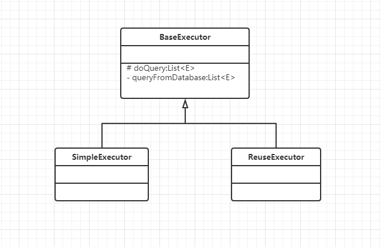

模板方法模式
Spring和Mybatis中都使用到了模板方法设计模式。
Mybatis：
在抽象类BaseExecutor定义了四个抽象方法（基本方法）：
1 | protected abstract int doUpdate(MappedStatement ms, Object parameter) |
并且在模板方法queryFromDatabase中实现对基本方法的调度：
1 | private <E> List<E> queryFromDatabase(MappedStatement ms, Object parameter, RowBounds rowBounds, ResultHandler resultHandler, CacheKey key, BoundSql boundSql) throws SQLException { |
Spring：
抽象类AbstractBeanDefinitionParser中parse(Element element, ParserContext parserContext)方法即为模板方法，基本方法parseInternal()由子类实现，来完成BeanDefinition的生成逻辑。
1 | /** |
定义
The template method is a method in a superclass, usually an abstract superclass, and defines the skeleton of an operation in terms of a number of high-level steps. These steps are themselves implemented by additional helper methods in the same class as the template method. The helper methods may be either abstract methods, for which case subclasses are required to provide concrete implementations, or hook methods, which have empty bodies in the superclass. Subclasses can (but are not required to) customize the operation by overriding the hook methods. The intent of the template method is to define the overall structure of the operation, while allowing subclasses to refine, or redefine, certain steps.
模板方法是超类中的方法（通常是抽象类），模板方法定义一个操作的步骤框架，而这些步骤由基本方法实现。
基本方法可以是抽象方法也可以是钩子方法。
模板方法的目的是定义操作的整体结构，同时允许子类细化或重新定义某些步骤。
类图

使用场景
- 多个子类有公用的方法，且逻辑基本相同时。
- 重要、复杂的算法，可以把核心算法设计为模板方法，相关细节功能由子类实现。
简单实践
1 | public abstract class BaseTeaProvider { |
1 | public class GreenTeaProvider extends BaseTeaProvider { |
1 | public class RedTeaProvider extends BaseTeaProvider { |
父类定义模板方法tea()规定上茶的几个步骤，由子类实现具体的步骤行为。
参考
《设计模式之禅(第2版)》
原文作者: chensiqu
原文链接: http://www.csiqu.club/2020/03/06/template-pattern/
版权声明: 转载请注明出处(必须保留作者署名及链接)